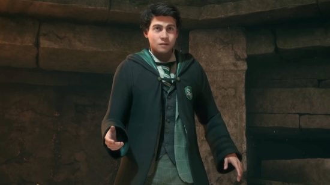

Slytherin
"O tal vez en Slytherin, harás tus verdaderos amigos. Esa gente astuta utiliza cualquier medio para lograr sus fines."
Slytherin es una de las cuatro casas del Colegio Hogwarts de Magia y Hechicería, fundada por Salazar Slytherin. Al establecer la casa, Salazar instruyó al Sombrero Seleccionador para que seleccionara a los estudiantes que tenían las características particulares que él valoraba más. Esas características incluyen: astucia, ingenio y ambición. Muchos estudiantes de Slytherin tienden a hacer camarillas juntos, a menudo adquiriendo líderes, lo que es un ejemplo más de las ambiciosas cualidades de Slytherin. Ejemplos de estos incluyen la pandilla de Draco Malfoy y los mortífagos.
Vestimenta
La vestimenta de los estudiantes de la casa Slytherin se atribulle a colores verde oscuro y negro.
Reputación
"No hay una sola bruja o mago perverso que no estuviera en Slytherin."
Slytherin tiene una reputación muy conocida por crear brujas y magos oscuros, que muchos incluso dirían que cada bruja o mago oscuro estuvo realmente en Slytherin. Si bien es cierto que muchos estuvieron en la casa, es falso decir que cada uno de ellos lo estuvo, ya que Peter Pettigrew, traidor de James y Lily, estuvo en Gryffindor y Quirinus Quirrell estuvo en Ravenclaw. Parece que la reputación ha llevado a un prejuicio irónico contra toda la casa. No se sabe cuántas brujas y magos oscuros fueron de esta casa antes de que Tom Ryddle comenzara a reclutar a los mortífagos, pero muchos de ellos venían de una familia que valoraba la pureza de la sangre y preferirían, como Ryddle, estar en la casa y reclutar desde allí.
También podría ser posible (aunque bastante improbable) que el Sombrero Seleccionador simplemente seleccionara a cualquiera con malas intenciones para Slytherin, independientemente de si posee astucia o ambición, lo que ayudó a darle una mala reputación a esta casa. Vincent Crabbe y Gregory Goyle eran increíblemente estúpidos y no tenían mentes inteligentes o astutas, pero fueron seleccionados para Slytherin. Podrían haber poseído uno de los rasgos menores ya que incluso Peter Pettigrew no fue colocado en Gryffindor por valentía, sino por caballerosidad en su lugar.
Rasgos
"Siempre supe que Salazar Slytherin era un viejo loco retorcido, pero nunca supe que comenzó todas estas cosas de sangre pura. No estaría en su casa si me pagaras. Honestamente, si el Sombrero Seleccionador hubiera intentado ponerme en Slytherin, habría tomado el tren directamente a casa..."
Los Slytherin tienden a ser líderes ambiciosos, astutos y fuertes, orientados a los logros. También tienen sentidos altamente desarrollados de autopreservación. Esto significa que los Slytherin tienden a dudar antes de actuar, a fin de sopesar todos los resultados posibles antes de decidir exactamente qué se debe hacer.
Ellos tienden a hacerse cargo y poseen fuertes habilidades de liderazgo. A menudo son seguros de sí mismos, confían en su propia competencia y pueden ser muy leales.
Sala común
La única contraseña conocida de Slytherin es "sangre pura".
Tras la pared de piedra se encuentra la sala común y las habitaciones, iluminadas por lámparas de techo de color verde con sillones de cuero negro, sillas y mesas de madera tallada cubiertas de elaborados manteles. La sala se extiende parcialmente bajo el Lago Negro, lo que le da a la misma una luz verdosa. Tiene un buen ambiente, pero también es bastante frío